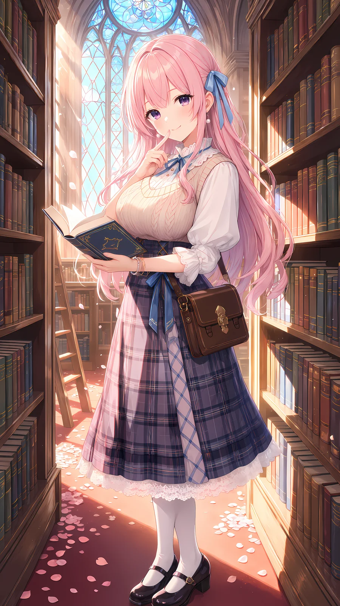
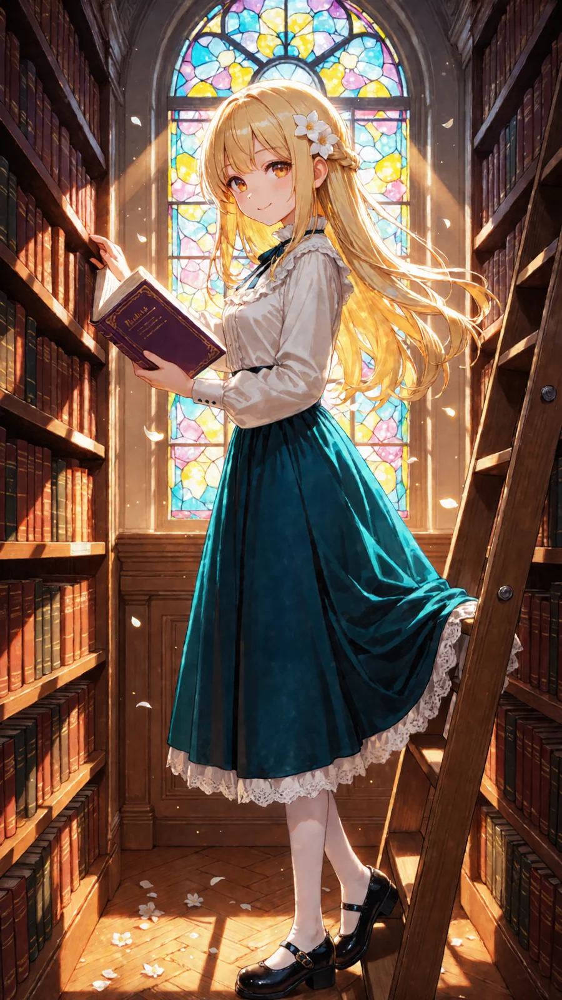
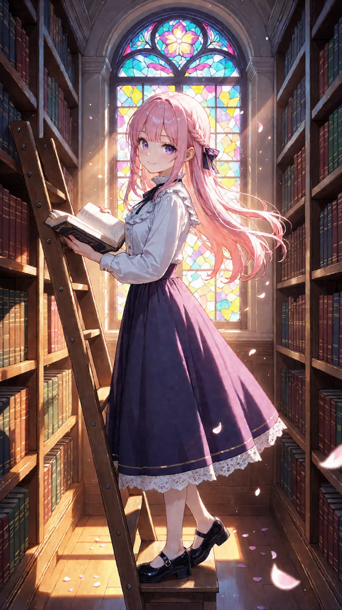
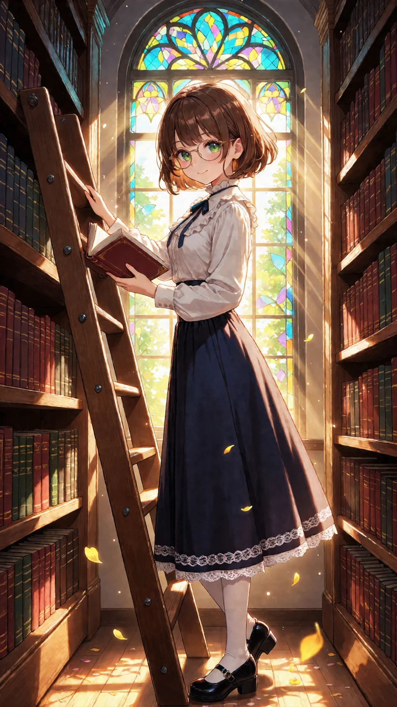

ComfyUI 用2026-10-01
高い本棚とはしごの並ぶ図書館で、ステンドグラスの色の光を浴びながら本をひらいてふり返る、午後のシーンのプロンプトです。オリキャラがいなくても、そのまま貼るだけで綺麗な女の子で出ます。自分のキャラにしたいときは、1行目の見た目だけ書き換えてください。
作例




※作例の画像の転載・保存しての再配布はご遠慮ください。
3人のおしゃべり（図書館ではお静かに）

アイリス
見て見て！ ステンドグラスの光が床まで虹色になってる！ あたしもここで本読みたい〜！
フィオナ
高い本棚とはしご……花びらまで舞っていて、物語の中の図書館みたいです

ルピナス
1行目の髪の色や眼鏡を書き換えるだけで、金髪にも、ピンクの三つ編みにも、眼鏡の女の子にもなりますよ

アイリス
ねえねえ、スカートの色が毎回ちがうよ？ 紺とか、青緑とか、紫とか！

フィオナ
決めたいときは、2行目のスカートの前に色を足せばいいみたいです……メモしておきますね
ルピナス
オリキャラがいなくても、そのまま貼るだけで大丈夫。図書館ではお静かに、ですよ
使い方（3ステップ）
- ComfyUI で Anima のモデルを読み、基本の画像生成（テキストから画像）の画面にする
- 下のポジティブとネガティブをワンタップでコピーして貼る（自分のキャラにするなら1行目だけ書き換える）
- 「推奨値」の大きさ・steps・CFG にして生成する（できれば 1.5 倍の hires fix も）
プロンプト
変えるのは1行目（色の付いた行）だけ
- 1行目＝キャラの見た目（髪の色・髪型・目の色など）。自分のキャラの特徴に書き換えてね
- オリキャラがいない人は、そのままコピーして使えばOK（作例の女の子で出ます）
- 自分のキャラの LoRA がある人は、1行目に LoRA のトリガー語を入れてね
- 2行目から下（シーン）と、ネガティブプロンプトは変えずにそのまま
- 🚫 版権キャラの名前・版権キャラの LoRA を入れて使うのは固く禁止です（下の「配布ルール」）
ポジティブプロンプト
1girl, solo, long hair, wavy hair, silver hair, blue eyes masterpiece, best quality, score_7, safe, smile, looking at viewer, standing on ladder, library ladder, holding book, open book, hand on ladder, white blouse, frilled collar, neck ribbon, long skirt, lace trim, mary janes, from side, full body, library, tall bookshelves, bookshelf, stained glass window, colorful light, light rays, dappled light, dust particles, afternoon, sunlight, floating petals, depth of field, detailed background, scenery, cinematic lighting, warm colors
ネガティブプロンプト
worst quality, low quality, lowres, bad anatomy, bad hands, extra fingers, missing fingers, fused fingers, blurry, jpeg artifacts, text, watermark, signature, logo, extra person, multiple girls, panties, pantyshot, cropped, out of frame, japanese text, chinese text, korean text, kanji, hiragana, katakana, calligraphy
必要なもの（ComfyUI）
🧩 カスタムノードは使っていません。LoRA も要りません。ComfyUI の基本の画像生成（テキストから画像）に、ポジティブ・ネガティブを貼って、下の推奨値にするだけです。
| モデル | ファイル | 置き場 |
|---|---|---|
| Anima 系のモデル | PrismPalette_ANIMA_v1 など好きな Anima | models/diffusion_models |
| テキストエンコーダ（Anima 用） | qwen_3_06b_base.safetensors | models/text_encoders |
| VAE（Anima 用） | qwen_image_vae.safetensors | models/vae |
推奨値
| 大きさ | 864×1536（縦長＝全身の立ち姿） | |
|---|---|---|
| steps | 30 | |
| CFG | 4.5 | |
| sampler | er_sde | |
| scheduler | beta | |
| hires fix（任意） | 1.5 倍に拡大して denoise 0.4・同じ steps と CFG（作例はこれ） | |
| LoRA | 要りません（自分のキャラの LoRA があれば使ってOK） | |
メモ
- 1行目には見た目だけを書いてください（髪の色・長さ・髪型・髪飾り・目の色・眼鏡など）。服・場所・光は2行目からに入っています。
- 手は本を持つ形にしてあるので、くずれにくくなっています。くずれたら seed を変えて何枚か焼いてください。
- 服の色は seed で変わります（紺・青緑・紫など）。決めたいときは2行目の long skirt の前に navy blue などの色を足してください。
配布ルール
- ⭕ プロンプトの改変は自由です。
- ⭕ 生成した画像は SNS に投稿して大丈夫です。
- ❌ プロンプト文そのものの転載・再配布・販売はしないでください。
- ❌ 自作のプロンプトだと名乗ることはやめてください。
- ❌ このページの作例画像の無断転載はしないでください。
- 🚫 アニメ・漫画・ゲームなどの版権キャラクター（著作権・商標のあるキャラ）、他の人のキャラクターやイラスト、実在の人物の写真を添付画像にして使うことは固く禁止します。版権キャラの名前や、版権キャラの LoRA を入れて使うことも禁止です。
- ✅ 添付してよいのは、自分で作ったキャラクター・自分が権利を持つ画像（または権利者から使ってよいと言われた画像）だけです。
- ⚠️ 生成した画像の使い方（投稿・公開など）は、使った人の責任でお願いします。権利の問題が起きても、配布者は責任を負えません。
- 💌 使ったら #ルピナスプロンプト を付けて見せてくれたら、とても嬉しいです（任意です）。
バックナンバー
📚 これまでの配布は バックナンバー にまとめてあります（作例の絵と内容が一覧で見られます）。お友だちに教えるときは、バックナンバーのページの URL を送ればOKです。